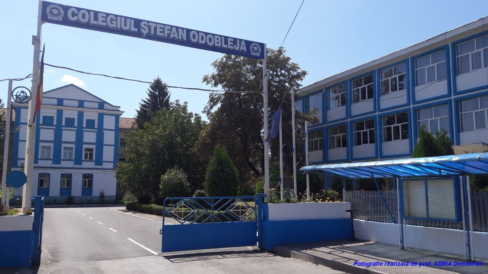

Cod de Acreditare VET Erasmus+: 2020-1-RO01-KA120-VET-095402
Proiect Erasmus+ numărul 2021-1-RO01-KA121-VET-00009170, “Erasmus+, Oportunitate pentru formare profesională în
context european”
Informatii Generale
- Școala beneficiară: Colegiul “Ștefan Odobleja”, Craiova
- Țări participante: România, Spania, Cipru
- Perioada de desfășurare: 01.09.2021 - 30.11.2022 (durată - 15 luni)
- Nr de participanţi: 28 elevi + 6 profesori de Informatică și Discipline tehnice
Proiectul „Erasmus+ Oportunitate pentru formare profesională în context european” a
urmărit îmbogăţirea abilităţilor, cunoştinţelor, deprinderilor utilizând noi tehnologii în medii de lucru
moderne,
a 28 de elevi.
- 14 elevi - Calificarea Tehnician proiectant CAD
- 14 elevi - specializarea Matematică-Informatică, care se pregătesc pentru susținerea Atestatului profesional.
De asemenea proiectul vine în sprijinul dezvoltării profesionale a cadrelor didactice prin participarea la cursuri de formare a 6 profesori din școala noastră.
La sfarsitul celor trei fluxuri, atât elevii cât si profesorii au primit certificate bine meritate.
